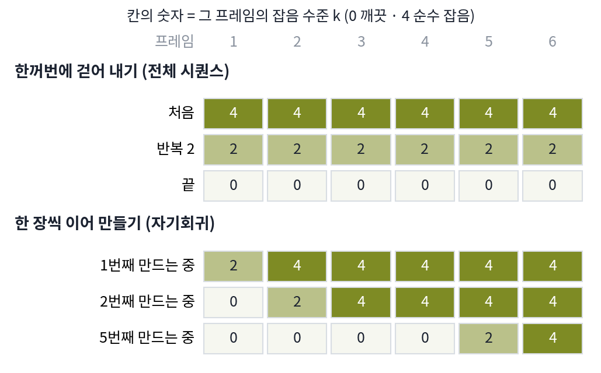

영상 생성: 시퀀스와 디퓨전 사이
이 장의 물음
디퓨전 트랜스포머는 1024 × 1024 그림 한 장을 잠재 그림으로 줄이고 2 × 2 패치로 잘라 토큰 4,096개로 다뤘다. 참조 그림을 여러 장 넣을 때는 좌표의 첫째 축인 번호 축에 몇 번째 그림인지를 매겨 그림들을 한 줄에 세웠다. 그 줄의 그림을 모두 새로 만들어야 하고 번호가 시간 순서라면, 그것이 영상이다. 이를테면 1초에 열여섯 장씩 이어진 그림이다. 알리바바가 공개한 영상 생성 모델 Wan2.1 을 ComfyUI 에서 열면 기본 설정이 832 × 480 크기의 프레임 81장, 곧 5초짜리 영상이다. 이 모델의 VAE 는 가로세로를 8분의 1로 줄이면서 프레임도 넷씩 묶어(첫 프레임만 혼자) 잠재 프레임 21장을 만들고, 잠재 프레임 하나를 2 × 2 패치로 자르면 토큰이 1,560개다. 5초짜리 영상 하나가 토큰 32,760개, 그림 한 장의 8배이고, 셀프 어텐션이 견주는 쌍은 64배다.
크기만 문제가 아니다. 5초가 아니라 3분짜리 영상을 원하면 어떻게 할까? 플레이어가 버튼을 누를 때마다 다음 장면이 바뀌어야 하는 게임 화면이라면? 처음부터 끝까지를 한 번에 정해 놓고 만들 수 없으니, 앞에서 만든 프레임에 이어 붙여 가야 한다. 그런데 그렇게 이어 붙인 영상은 처음 몇 초는 멀쩡하다가 점점 색이 바래거나, 지나치게 선명해지거나, 인물이 뭉개진다. 이 장은 다음 물음에 차례로 답한다.
- 프레임 수십 장을 한꺼번에 걷어 낼까, 한 장씩 이어 만들까? 두 방법은 각각 무엇을 맞히도록 배울까?
- 한 장씩 이어 만드는 모델은 왜 뒤로 갈수록 무너질까? 학습 때 본 과거와 만들 때 딛는 과거는 무엇이 다를까?
- 학습 때 모델에게 보여 줄 과거를 어디서 가져와야 그 틈이 줄어들까?
- 학습 때 굴려 본 길이보다 훨씬 긴 영상을 만들면 무엇이 다시 틀어질까?
두 목표의 만남: 영상은 프레임의 줄이자 걷어 낼 잡음이다
지금까지 만든 디퓨전 모델은 그림 한 장의 잡음을 한꺼번에 걷어 냈다. 영상 81장도 그렇게 할 수 있을까? 81장을 한 덩어리로 보고 모든 프레임의 잡음을 함께 걷어 낼 수도 있고, 첫 프레임을 만든 뒤 그것을 보고 둘째 프레임을 만드는 식으로 한 장씩 이어 갈 수도 있다. 앞의 것은 그림 디퓨전을 시간 축으로 늘린 것이고, 뒤의 것은 언어모델이 다음 토큰을 하나씩 쓰는 방식을 프레임에 옮긴 것이다. 둘은 학습하는 목표부터 다르다.
두 방식을 잡음 수준으로 나란히 놓기
프레임 여섯 장으로 두 방식을 나란히 그려 보자. 칸의 숫자는 그 프레임에 남은 잡음의 양을 다섯 단계로 센 것이다. 0이 깨끗한 프레임, 4가 아무 정보도 없는 순수 잡음이다. 지금까지 시간 t 로 적던 잡음 수준을 단계로 센 것이라, 이 장에서는 글자를 바꿔 k로 쓴다. 프레임 번호와 잡음 수준이 둘 다 흔히 「시점」이라 불려서, 한 글자로 쓰면 곧 헷갈리기 때문이다.

위쪽 방식은 영상 전체를 그림 한 장처럼 다룬다. 잠재 프레임 21장의 토큰을 모두 한 줄로 이어 디퓨전 트랜스포머에 넣고, 모든 토큰이 앞뒤 프레임의 토큰을 다 읽게 한다. 아래쪽 방식은 「앞 프레임들을 보고 다음 프레임을 맞힌다」를 되풀이한다. 두 목표를 식으로 적으면 이렇다.
오른쪽은 잡음을 맞히는 신경망을 배울 때 쓴 바로 그 손실이다. 다른 것은 입력 x가 그림 한 장이 아니라 영상 전체라는 것뿐이다. 이렇게 모든 프레임에 같은 잡음 수준을 주고 영상 전체를 함께 걷어 내는 방식을 전체 시퀀스 디퓨전 (영상 통째로 걷어 내기 / full-sequence diffusion)이라 한다. 모델은 앞뒤 프레임을 모두 보며(양방향) 잡음을 걷어 내므로 움직임이 매끄럽다. 대신 길이가 학습 때 정한 만큼으로 묶이고, 마지막 걸음이 끝나야 첫 프레임도 나온다.
왼쪽은 언어모델의 손실과 같은 꼴이다. 앞의 것들을 보고 다음 하나의 확률을 매기고, 그 로그를 모두 더한다. 이렇게 앞에서 자기가 만든 것을 다시 입력으로 받아 다음 것을 만들어 가는 방식을 자기회귀 (자기 출력에 이어 만들기 / autoregressive)라 한다. 「자기」는 오토인코더의 auto- 처럼 자기 자신이라는 뜻이다. 다만 프레임은 토큰처럼 몇만 개 가운데 하나를 고르는 값이 아니라 연속값이라, 다음 프레임의 분포 pθ(xn ∣ x<n)를 디퓨전으로 나타낸다. 과거 프레임을 조건으로 받아 다음 프레임의 잡음을 걷어 내는 것이다. 과거만 보므로(인과적, causal) 길이에 제한이 없고, 만든 프레임을 바로 내보낼 수 있다(스트리밍). 이때 디퓨전 트랜스포머는 언어모델처럼 뒤 프레임의 토큰을 가려, 토큰이 자기 프레임과 앞 프레임만 읽게 한다.
| 전체 시퀀스 디퓨전 | 자기회귀 | |
|---|---|---|
| 보는 방향 | 앞뒤 모두(양방향) | 과거만(인과적) |
| 길이 | 학습 때 정한 길이 | 제한 없음 |
| 첫 프레임이 나오는 때 | 모든 걸음이 끝난 뒤 | 첫 프레임의 잡음을 걷어 내자마자 |
| 약점 | 느리고 길이가 묶인다 | 앞에서 생긴 작은 오류가 뒤로 쌓인다 |
표의 마지막 줄이 이 장 전체의 줄거리다. 2024년부터 「○○ 포싱(forcing)」이라는 이름의 학습법이 잇달아 나왔다. 포싱은 학습 때 모델에게 보여 주는 과거를 어디서 가져오는가를 정하는 학습법의 이름이다. 이 학습법들은 모두 두 목표를 한 모델에 어떻게 담을지, 그리고 자기회귀의 약점을 어떻게 막을지에 대한 답이다.
ML에서: 영상 모델은 어느 쪽으로 가고 있나
2024년까지 공개된 큰 영상 모델은 대부분 전체 시퀀스 디퓨전이었다. Wan2.1 도 이쪽이다. 수 초짜리 영상을 한 번에 만들고, 더 길게 하려면 끝부분을 조건으로 다음 덩어리를 다시 만들었다. 2025년에는 자기회귀 쪽이 규모를 키웠다. Sand AI 의 MAGI-1(2025년 5월)은 영상을 24프레임짜리 덩어리(청크) 단위로 이어 만드는 매개변수 240억 개짜리 모델로, 뒤 덩어리일수록 잡음이 많게 덩어리마다의 잡음을 단조롭게 늘려 두고 여러 덩어리를 공장의 흐름 작업처럼 겹쳐 걷어 낸다. SkyReels-V2(2025년 4월)는 전체 시퀀스 모델을 가져와 프레임마다 다른 잡음을 주는 방식으로 다시 학습해 길이 제한을 풀었다. 둘 다 프레임(덩어리)마다 잡음 수준을 다르게 준다는 점에서, 이 장 뒤쪽의 디퓨전 포싱과 같은 도구를 쓴다.
문제 1. 10초짜리 영상의 토큰
Wan2.1 에 832 × 480 크기의 프레임 161장(1초에 16장으로 10초)을 넣는다. VAE 는 첫 프레임을 혼자, 그 뒤는 넷씩 묶어 잠재 프레임 하나로 만들고, 가로세로를 8분의 1로 줄인다. 패치는 가로세로 2 × 2다. (가) 잠재 프레임은 몇 장이고 토큰은 모두 몇 개인가? (나) 5초짜리(토큰 32,760개)보다 셀프 어텐션이 견주는 쌍은 몇 배인가? (다) 「영상 길이를 두 배로 늘리면 견주는 쌍은 정확히 네 배」라는 말은 맞는가?

161 ÷ 4 = 40.25니까 잠재 프레임은 40장쯤이요. 한 장에 토큰이 60 × 104 ÷ 4 = 1,560개라 40 × 1,560 = 62,400개.

81장일 때 잠재 프레임이 몇 장이었죠? 같은 셈으로 81 ÷ 4를 해 보면요?

20.25인데 실제로는 21장이었어요. 첫 프레임이 혼자 한 장이니까 1 + (81 − 1) ÷ 4 = 21이에요. 161이면 1 + 160 ÷ 4 = 41장, 토큰은 41 × 1,560 = 63,960개네요.

(나)는 토큰 비가 63,960 ÷ 32,760 = 1.952니까, 쌍은 그 제곱인 3.81배야.

그러면 (다)는 틀렸네. 프레임 수는 81에서 161로 두 배가 안 되고(1.99배), 잠재 프레임은 21에서 41로 1.95배야. 첫 프레임을 혼자 묶는 몫 때문에 정확히 두 배가 아니야.

그래요. 그래도 거의 네 배라는 큰 그림은 맞아요. 전체 시퀀스 모델은 영상이 길어지면 셈이 길이의 제곱으로 자라요. 그래서 학습 때 길이를 정해 두는 거예요.

조별 과제에서 조원이 두 배로 늘면 서로 맞춰 봐야 할 짝은 네 배가 되는 거랑 같네요. 회의가 갑자기 길어지는 까닭이요.
문제 2. 어느 쪽으로 만들까
다음 세 가지 쓰임새에 전체 시퀀스 디퓨전과 자기회귀 가운데 어느 방식이 맞는지 고르고, 이유를 한 줄로 쓰시오. (가) 광고용 5초 영상 한 편 (나) 플레이어의 조작에 따라 다음 화면이 바뀌는 게임 화면 (다) 끊기지 않는 3분짜리 영상

셋 다 전체 시퀀스죠. 앞뒤를 다 보니까 품질이 더 좋다고 했잖아요.
(나)에서 플레이어가 3초 지점에 오른쪽으로 꺾었어요. 전체 시퀀스 모델은 그 조작을 언제 알게 되죠?
영상 전체를 한꺼번에 만들기 시작할 때 이미 3초 뒤 장면까지 걷어 내고 있으니까… 조작이 들어올 자리가 없네요.
(다)도 걸려. 학습 때 정한 길이가 5초면 3분은 한 번에 못 만들어. 끝부분을 조건으로 이어 붙여야 하는데, 그건 사실상 덩어리 단위 자기회귀야. 앞 문제에서 본 것처럼 셈도 길이의 제곱으로 늘고.

그래요. 품질은 조건이 맞을 때의 이야기예요. 조작이 중간에 들어오거나 길이가 정해져 있지 않으면 자기회귀만 남아요. (가)처럼 짧고 길이가 정해져 있으면 양방향으로 보는 쪽이 유리하고요. 다만 (다)에서 이어 붙이는 순간, 이어 붙인 자리에서 오류가 쌓이는 문제가 생겨요.
발표 자료를 통째로 다 만든 뒤에야 질문을 받겠다는 것과 같네요. 발표 중간에 들어온 질문은 반영할 수가 없죠.